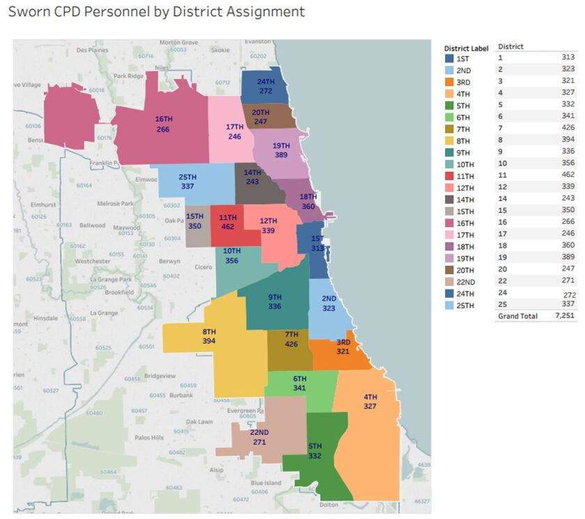
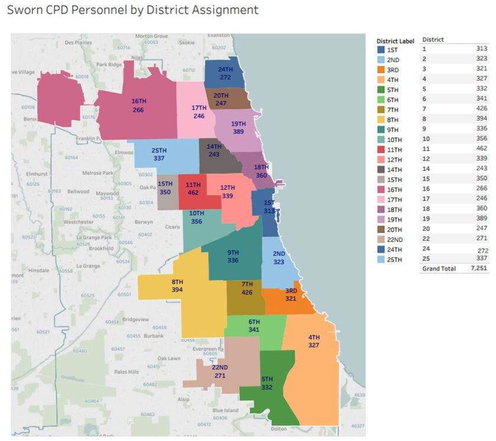

Chicago Crime Dashboard
 

An interactive dashboard using Python and Tableau to visualize and draw insights about historic trends in Chicago crime.
Chicago is a city with a growing reputation for violence and danger. Residents' feeling of safety continues to wane as more and more neighborhood's feel the sting of weapons, drugs, and lawlessness. This changing climate prompted my curiosity - what is the greater ailment, the action or the response, and how can we illuminate it?
A dive intothe data revealed some interesting things about the city, some expected some unexpected. Unsurprisingly, the police departments that most frequently end their cases in arrest were consistently located in the North/Northwest sides of the city (20th, 17th, 16th, 25th). This is potentially attributable to the difference in demographic, changing which types and what volume of crimes constitue police cases. Compared to the south and west sides, the northern neighborhoods generally see less incidents overall. More of the crimes with lower arrest probabilities likely occur more in more densely populated areas, skewing against the departments in those locations.
Overall, the amount of reported crimes has remained stable throughout the past decade. That being said, the pervasive feeling of increasing violence is not necessarily without merit. A closer look at gun crime and carjackings specifically may create a clearer picture of the change in the city. Visualizing changes in crime rates/portrait in individual neighborhoods may also show why perception has shifted.
In summary, this dashboard is made to serve as an overview meant to generate questions. Specific analyses on certain segments would be a good way to get a closer look at answering the complex issues in this city. Data that encapsulates things like citizen income, department budgets, 911 call frequencies, and citizen sentiments would go a long way towards guiding effective action against crime.
• NOTE: A glitch in Tableau prevented the project from saving, leaving just a screenshot & losing interactivity.